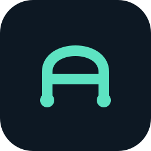

Des mesures claires.
Une identité précise.
Un pont original pour relier vos fichiers à vos mesures. Bleu encre pour la lisibilité, turquoise minéral pour les actions. Une même signature, du petit pictogramme à l’écran Android.
Télécharger le kit completLe bon logo, sur le bon fond.



Un symbole qui tient à petite taille.
Deux piliers, une liaison. Zone de protection : ¼ de la largeur du symbole. Aucun étirement ni effet ajouté.


Du navigateur au support de présentation.
Logos transparents en haute définition, symboles et avatars 512 px. Le favicon recadre le pont pour rester net à 16 px ; il suit le thème du navigateur.
Logo horizontal
SVG éditable ou PNG transparent de 1440 × 256 px. Clair, sombre, monochrome et blanc.
Logo PNGSymbole & avatar
512 × 512 px. Symbole transparent pour un document, avatar avec fond pour un profil.


Favicon & icône
SVG adaptatif, PNG 16 / 32 px pour le navigateur, icônes 192 / 512 px.


Encre & turquoise minéral.
Les thèmes clair, sombre et système suivent votre choix sur l’ensemble du site. Les actions gardent un libellé : la couleur seule ne porte jamais le sens.
Clair
EXEMPLE FICTIF · HISTORIQUE LOCAL
#F2F7F5#101E2D#087F6F#49645DSombre
EXEMPLE FICTIF · HISTORIQUE LOCAL
#0D1823#F4FAF8#5DE3C2#A6BCB8Chaque icône a une fonction.
Lucide : grille 24 px, trait 2 px, angles arrondis. Des actions compréhensibles, toujours accompagnées de texte. Les icônes d’import et d’export décrivent un mouvement de fichier local.
Onglet Mesures, dernière mesure, évolution
chart-lineUne série de mesures ; évite une horloge ambiguë.
Import, choisir un CSV, état vide
file-upUn fichier entre dans l’application ; aucun lien avec un upload réseau.
Journal d’import, journal vide
list-checksListe des opérations confirmées et de leurs comptes.
Options et préférences
sliders-horizontalRéglages d’apparence et de langue.
Stockage local et contrôle des données
hard-driveDécrit le stockage sur cet appareil, sans prétendre à une certification.
Association des colonnes CSV
columns-3Rend visible le travail sur des colonnes.
Vérification des lignes et aperçu
clipboard-checkÉtape de revue avant confirmation, pas garantie que toutes les lignes sont valides.
Confirmer l’import
checkValidation explicite par l’utilisateur.
Export CSV/JSON et téléchargement du CSV d’exemple
file-downUn fichier sort vers l’emplacement choisi.
Exemple fictif
flask-conicalSignale le caractère de démonstration.
Choix de colonne, unité, thème et langue
chevron-downIndique un menu de sélection.
Suppression des données
trash-2Action destructive, couleur d’erreur et confirmation conservées.